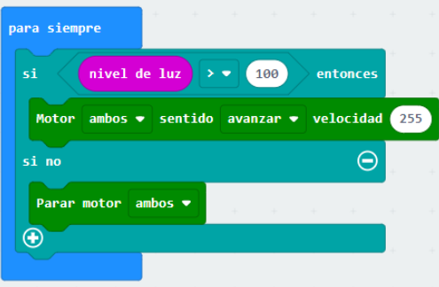
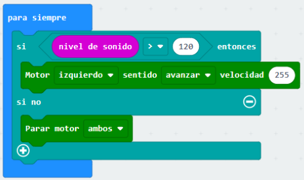
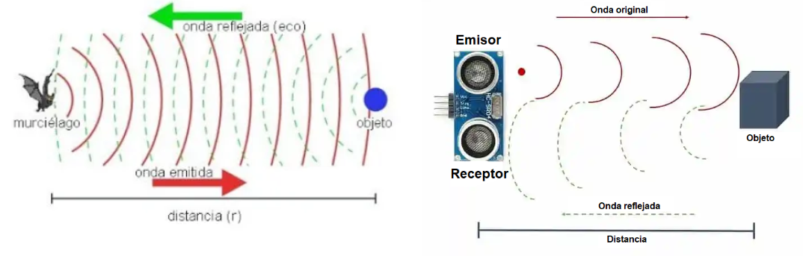
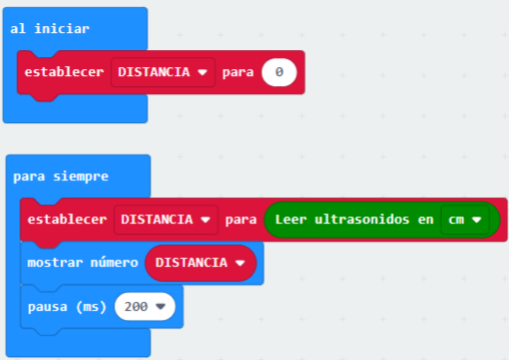
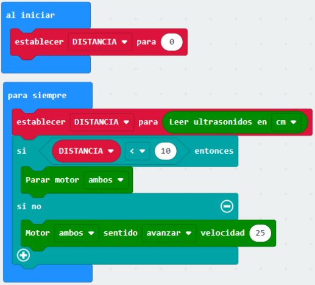
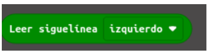
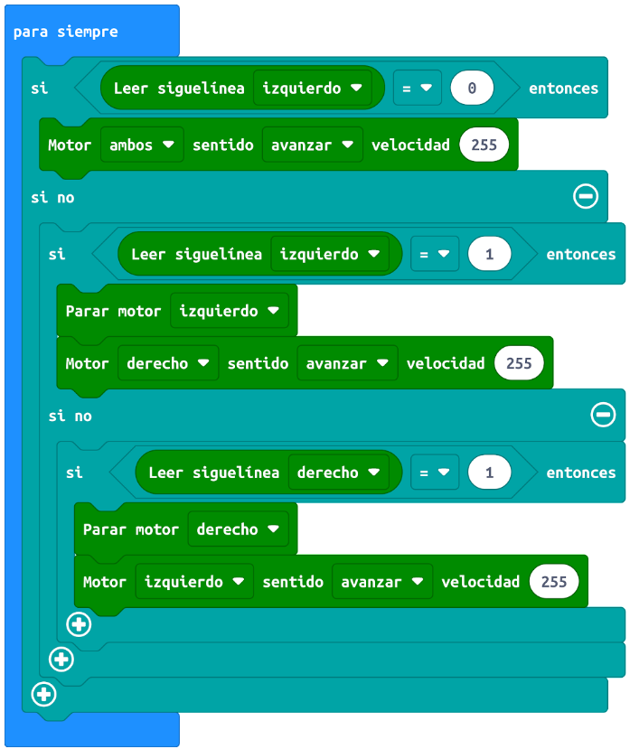

Como vimos al principio del tema, el robot Maqueen dispone de varios sensores, que pueden servimos para nuestros proyectos y que vamos a estudiar a continuación.
También podemos utiliza todos los sensores de la placa micro:bit con el robot Maqueen.
3.1.- Sensor de luz
El sensor de luz pertenece a la placa micro:bit, pero puede servirnos para hacer por ejemplo que el robot se mueva cuando recibe la luz, como en el siguiente ejemplo. En este programa hemos incluido el bucle de lógica si ... si no ..., para que nuestro Maqueen tome decisiones y se comporte como un verdadero robot.

3.2.- Sensor de sonido
También podríamos hacer un programa en el que Maqueen se ponga a girar cuando detecte un sonido fuerte:

De la misma forma, podemos usar el resto de sensores de la placa micro:bit (temperatura, brújula, acelerómetro, botones, radio, etc.), para mover el robot Maqueen.
3.3.- Sensor de ultrasonidos
El robot Maqueen tiene un sensor de ultrasonidos en su parte delantera, que puede medir la distancia que hasta un objeto en centímetros, con bastante precisión, lo hace emitiendo un ultrasonido y midiendo la distancia que tarda en llegar (como hacen los murciélagos). Uno de los sensores actúa como emisor de la onda ultrasónica y el otro como receptor de la misma.

Con el siguiente programa, podemos ver en la pantalla de la placa micro:bit, la distancia en centímetros hasta un objeto que le coloquemos delante.

Mediante el siguiente programa conseguimos que Maqueen se mueva hacia adelante hasta que se encuentra con algún obstáculo, en cuyo caso, para sus motores.

Actividad 3: Usamos los sensores
Conecta al ordenador la placa de micro:bit y realiza los siguientes ejercicios:
- Crea un programa en el que el robot Maqueen encienda los LEDs RGB de color blanco al apagar las luces de la clase y las apague al volver a encenderlas.
- Haz un programa en el que Maqueen esté girando sobre su eje hasta que detecte un objeto delante suyo, en cuyo caso, parará y encenderá los LEDs delanteros.
- Programa Maqueen para que gire cuando detecte un objeto a menos de 15 cm. para conseguir que se mueva sin chocar.
3.4.- Sensor seguidor de líneas
El robot Maqueen tiene en la parte de abajo dos sensores de infrarrojos que detectan si están sobre una zona clara u oscura, indicándolo mediante dos pequeños diodos LED de color blanco situados en la parte delantera.
Enciende el robot y colócalo sobre superficies blancas y negras, verás cómo se encienden los diodos LED delanteros.
El siguiente bloque que se encuentra dentro de la categoría Maqueen es que nos permite saber el color de la superficie sobre la que se encuentra. Este bloque devuelve el valor de 1 si se encuentra sobre una superficie clara y 0 si se encuentra sobre una superficie oscura.

El siguiente programa sirve para que Maqueen siga el camino marcado mediante una línea negra sobre un fondo blanco. Analízalo y describe su funcionamiento antes de probarlo en Makecode.

Combinando el funcionamiento de los dos sensores vistos anteriormente, podemos construir un robot "sumo", como podemos ver en el siguiente vídeo.
Actividad 4: Sensor seguidor de líneas
Conecta al ordenador la placa de micro:bit y realiza los siguientes ejercicios:
- Crea un programa en el que el robot Maqueen avance hasta encontrarse con una línea negra en el suelo, en cuyo caso se parará.
- Programa el robot Maqueen para que funcione como un robot "sumo". Ha de girar sobre su eje hasta que detecte un objeto, en cuyo caso avanzará hasta sacar el objeto del círculo marcado de negro.
- Programa el robot Maqueen para que funcione como un robot sigue líneas. Añade los bloques necesario para que el robot pare si se encuentra un obstáculo en su camino.
- Crea un programa para que el robot Maqueen siga una línea negra y evite un obstáculo cuando se lo encuentre en su camino, regresando a su camino después. Si el robot va por el camino negro debe mostrar las luces de color verde y si se aparta de la línea debe mostrar el color rojo.